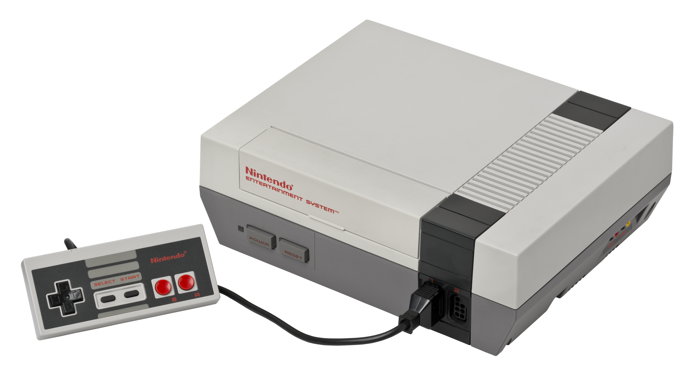
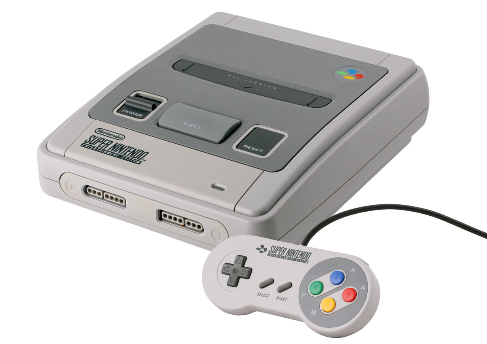
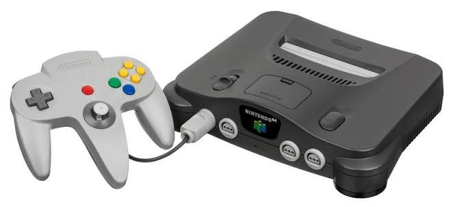
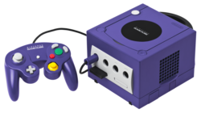
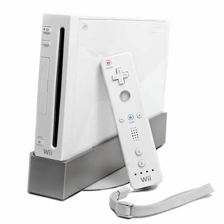
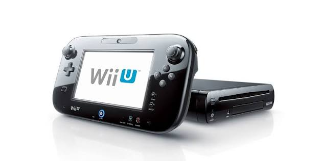
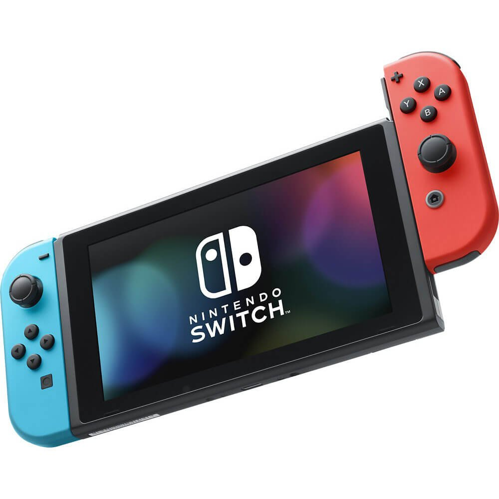
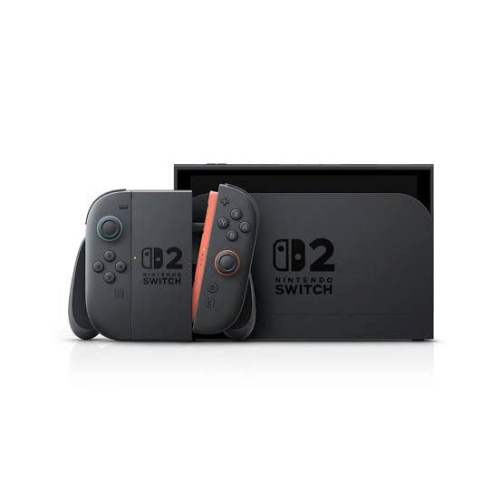

NES

Servicio técnico para mantenimiento y diagnóstico de la consola Nintendo Entertainment System.
Solicitar servicioConoce nuestras consolas Nintendo y solicita un servicio técnico.

Servicio técnico para mantenimiento y diagnóstico de la consola Nintendo Entertainment System.
Solicitar servicio
Servicio técnico para mantenimiento y diagnóstico de la consola Super Nintendo.
Solicitar servicio
Servicio técnico para mantenimiento, diagnóstico y reparación de la consola Nintendo 64.
Solicitar servicio
Servicio técnico para mantenimiento, diagnóstico y reparación de la consola GameCube.
Solicitar servicio
Servicio técnico para mantenimiento, diagnóstico y reparación de la consola Wii.
Solicitar servicio
Servicio técnico para mantenimiento, diagnóstico y reparación de la consola Wii U.
Solicitar servicio
Servicio técnico para mantenimiento, diagnóstico y reparación de la consola Nintendo Switch.
Solicitar servicio
Servicio técnico para mantenimiento, diagnóstico y reparación de la consola Nintendo Switch 2.
Solicitar servicio